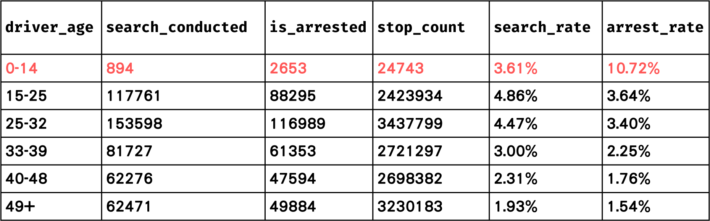
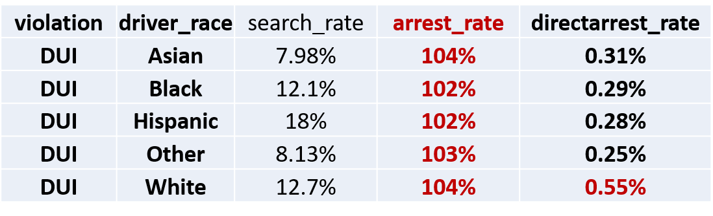

我沒做錯，警察別碰我｜分析加州交通事件警察攔查以及警察暴力致死事件數據資料
法律一魏子鈞、財金一徐子淵
專案概述
1. 簡介
2. 資料蒐集與前處理
3. 資料觀察
4. 第一題視覺化：加州交通事件警察執法年曆
5. 第二題假設驗證：加州警察執法上是否受種族歧視影響？
6. 第三之一題相關性分析：加州交通事件搜查率、逮捕率、警察暴力率相關性分析
7. 第三之二題地理資料：警察執法地圖
8. 回饋回覆與小研究
9. 分工表
簡介
在台灣長大生活多年的我們常稱呼警察為人民的保姆，社會上對警察作為社區好鄰居的形象，觀感普遍甚佳。然而，在橫跨一個太平洋的美國，警察恐怕不是什麼人民想見到的角色。我們平時在社會新聞裡往往觀察得到美國警察執法過當或是偏頗的消息，例如在追逐其實並不具有攻擊能力的歹徒時，還是選擇以開槍的手法處理。在法律學中有所謂的「比例原則」，即是對於立法者訂立的法律、政府機關訂定的規則進行檢驗，必須符合適當性、必要性、衡量性，適當性要求手段有助於目的的達成，必要性則著重為達成目的時必須採取對人民侵害最小的手段。美國警察對於許多案件的處理，恐怕無法通過必要性的檢驗。
為了正視這個問題，我們決定找尋相關資料，看看警察在什麼時間、被攔查對象是什麼種族、在哪個地區會有不同的執法處理，並關心執法過當致死的問題。
資料蒐集與前處理
本專案使用的資料：
1. 加州警察對交通事件攔查個案的處理數據 (Stanford Open Policing Project - California: Data on Traffic Pedestrian stops by Police in California)
2. 加州所有警察暴力執法過當致死數據 (Campaign Zero: Mapping Police Violence)
3. 加州地理空間資料 (Californian Geographical Data)
4. 2020年美國總統大選各個郡川普的得票率 (NBC News
California Presidential Election Results 2020)
補充說明：至於資料的選擇方面，會以加州為對象是因為該州資料較完整，且數據量較多。
加州的原始資料就有約1453萬筆，本文以為，以較豐富的數據資料進行分析可以獲
得較全面性的結果。
資料前處理：
除了一般的清理以外，我們有做在交通事件中，被警察攔查後遭到搜查的比率，以及被攔查後遭到逮補的比率，以下將簡稱為搜查率與逮捕率。此外，我們也有計算每個郡警察執法過當致死的比率，以下將簡稱為警暴率。
上述三種比率，我們定義如下：
搜查率：被警察攔查後執行搜查人數/被警察攔查人數
逮捕率：被警察攔查後執行逮捕人數/被警察攔查人數
警暴率：因警察暴力執法過當致死人數/該郡2013-2016年平均人口數
資料觀察
1. 性別：依照各種不同常見的交通違規事件分類，看觸犯規定的男女比

由上長條圖表可知，無論是在酒駕、設備（有無違法改裝、違規未開頭燈等）、駕駛違規（未按規定讓行、違規超車等），皆是男性遠高於女性，組間差距不顯著
2. 年齡：各年齡段的搜查率、逮捕率、警暴率分別是多少

0-14歲居冠：因為0-14歲兒童與少年本不應該駕駛，故一旦被警察攔查發現，自然有較高機率被搜查和逮補
3. 人數：加州警察在2013-2016年間殺多少人？因交通違規事件逮補多少人？
在交通攔查後搜查人數：448738
在交通攔查後逮捕人數：344562
因警察暴力執法過當致死人數：12339
由此可知，加州警察恐怕具有執法過當的問題，為了讓此說法更有公信力，我們也有上網另外查詢資料，發現加州每100萬人裡面就會有3.36人因警察暴力執法過當而死，但是麻州卻只有0.71人。
4-1. 地區：哪個郡搜查率最高？哪個郡逮捕率最高？
4-2. 地區：哪個郡警察暴力致死率最高？

第一題視覺化：加州交通事件警察執法年曆
｜哪個月份、日期被搜查、逮捕比例最高呢？年底？月底？
計算方式：
1. 計算每一年中每一天的搜查率(SR)與逮捕率(AR)
2. 把每一年中相對應日期的數據取平均
例：1月1日的搜查率 = (2013年1月1日搜查率 + 2014年1月1日搜查率 + 2015年1月1日搜查率 + 2016年1月1日搜查率) / 4
搜查年曆：

1. 1-6月搜查率相對中庸，尤以5月最為平均
2. 7-12月搜查率大起大落，尤以8、10月變異最大
3. 紅藍相間有些許規律可循：三天紅、四天藍
逮捕年曆：

1. 1-6月逮捕率相對中庸，尤以5月最為平均
2. 7-12月逮捕率大起大落，尤以8、10月變異最大
3. 紅藍相間有些許規律可循：三天紅、四天藍
月份趨勢：
分析與小結：
1. 上半年變異小(3-6月為最)；下半年變異大(8-10月為最)
2. 紅藍相間規律：三天紅、四天藍
推測原因：與警察執勤時數有關。以LAPD洛杉磯警察局為例，警局規定警察每週工作三天12小時，四天10小時，而這恰好與逮捕年曆的趨勢相符。
3. 最容易被搜查和逮捕月份：8月
我們原先假設加州交通警察會因為業績壓力在月底或年底比平常更積極地進行搜查與逮捕。經過數據統計、視覺化等探勘後，我們發現無類似趨勢，反而是上下半年數據的變異程度差異以及紅藍相間的規律更加明顯。
第二題假設驗證：加州警察執法上是否受種族歧視影響？｜哪個種族被搜查、逮捕比例最高呢？
各個違規罪名的情況下，不同種族的搜查率

1. 排除other，在各個罪行中亞裔是搜查率最低的族群
2. 在酒駕、設備、駕駛違規中，拉丁裔美國人對比白人都有較高的搜查率
3. 在設備、駕駛違規中，非裔美國人對比白人都有較高的搜查率
4.根據數據，加州交通警察最容易對拉丁裔進行搜查
各個違規罪名的情況下，不同種族的逮捕率

1. 排除other，在各個罪行中亞裔是逮捕率最低的族群
2. 在酒駕、設備、駕駛違規中，拉丁裔美國人對比白人都有較高的逮捕率
3. 在設備、駕駛違規中，非裔美國人對比白人都有較高的逮捕率
4.根據數據，加州交通警察最容易逮捕拉丁裔
各個違規罪名的情況下，有色人種vs白人的搜查率與逮捕率
排除other類別（雜含各類違規），有色人種在各類罪行的搜查率都比白人
高，逮捕率亦同。
被警察暴力執法過當致死的種族圓餅圖

由上圖可知，因為警察暴力執法過當致死的人數以拉丁裔佔最多數，其次是白人，非裔佔第三名。
其實前兩名與人口比例分佈是相符合的，加州有39%的居民自認是拉丁裔，35%居民屬於白人。然而，而僅僅5%的居民屬於非裔，
卻佔了警暴致死的16%，這就與人口分布趨勢不符。
雖然統計上無法直接證明一定就與種族歧視有關，但是可以合理推測，加州警察在執法時受到種族影響此一陳述，尚非無疑。
分析與小結：
假設驗證：加州警察有種族歧視嗎？
我們假設，因為加州警察多少存在種族歧視，所以預測有色人種最容易在攔查後被搜查、逮捕，以及施以警暴，尤以黑人為最。
經過數據統計、視覺化等探勘後，我們發現確實有類似趨勢，但在搜查、逮捕方面並沒有到極為顯著。
然而，在警察暴力執法過當致死方面，非裔顯然有較高的機率有此遭遇！
第三之一題相關性分析：加州交通事件搜查率、逮捕率、警暴率相關性分析
搜查率 vs 逮捕率：

高度正相關
相關係數：0.9364
合理：通常在搜查後才會執行逮捕，而搜查實施應該會有合理懷疑事由(有可能被逮捕)。
逮捕率 vs 警暴率 & 搜查率 vs 警暴率：
皆呈低度正相關
相關係數：0.3081; 0.3546
合理：搜查率與逮捕率的資料源頭是因交通事件而攔查後實施搜查或逮捕的紀錄，而警暴率的資料源頭是各郡警察暴力致死的數量統計。兩者的數據範圍不同，因此較難看出兩者的關係。
第三之二題地理資料：警察執法地圖｜哪個郡
搜查率、逮捕率、警暴率 最高呢？
加州各個郡(County)的搜查率&逮捕率：
Lake County之搜查率與逮捕率居冠
加州各個郡(County)的警暴致死率：

1. Trinity County：該郡人口偏少，警暴率居冠的背後原因應該與母體數量過低有關（因為第二名的Plumas County人口也不多）。
2. 警暴率第四名的Kern County，人口排名高居加州第11，可以合理推測此郡的高警暴率有參考價值。
分析與小結：
1. 逮捕率和搜查率呈高度正相關
2. 逮捕率、搜查率與警暴率皆呈低度正相關
推測原因：兩者資料範圍不同。
修改方向：若要確實比較兩者，應該用各郡總搜查或總逮捕人數(不應侷限在交通事件)去和警察暴力致死人數作比較分析。
3. Lake County之搜查率與逮捕率皆為加州最高
4. Trinity County之警暴率為加州最高，推測可能與其人口偏少有關
5. Kern County之警暴率為加州第四名，而其人口排名為加州第11名，因此該郡之高警暴率可能更有參考價值
回饋回覆與小研究
關於更改逮捕率定義的建議：
有同學建議說，將逮捕率定義改成「經搜查後逮捕人數∕總攔停人數」，因為這樣
更能反映其他變量的差距。我們聽取建議後立刻著手修改，卻發現因酒駕被攔停者，
各種族被逮捕的人數皆超過被搜查人數，換言之，有些案例是不經搜查直接逮捕。

從上表可見，在同為因酒駕而被攔檢的情況下，亞裔及白人有最高的逮捕率，其中又以白人直接逮捕率(direct arrest rate)最高，是一個神奇的小發現。然而，由於存在直接逮捕的情形，若改採行同學建議的定義去做進一步的計算與分析，會有超過
100%的問題，不便於部分統計的進行。
Back the Blue：政治信念對數據的影響：
有建議說，加州幅員遼闊、人口眾多，每個郡的政治傾向也略有差異。例如，不
支持槍枝管制、較保守的郡會傾向支持警察擁有較大的執法裁量權。Back the Blue
意譯為中文是「警察的命也是命」，即是由此而來。
而經由思考過後我們發現確實有其
道理，但首先我們遇到的問題是要怎麼定義「保守的郡/保守黨」。美國的兩大黨為⺠
主黨與共和黨，在2020年總統大選分別推出拜登與川普作為候選人，而因為普遍而
言川普的選⺠在許多價値上都被歸類為保守派（例如：反墮胎pro-life、反移⺠
anti-immigrant），所以我們決定用2020川普在加州各個郡的得票率數據來分析，
換言之，川普得票率較高的郡，就會被認定是「較保守的郡」。

循著上述建議，我們想知道「政治立場」與「警察執法」之間有無統計上的關聯性，結果發現兩組數據間的相關係數r為0.3838，t-test的p値為0.0000000588，屬於低度相關但差異高度顯著的類型。這種情況在統計分析上應該不屬於常見的類型，因為雖然兩個變量之間相關不大，但從數據來看這種弱相關應該是存在的，而非純屬偶然。然而，這種相關的實際強度非常小，基本上可以忽略。或者，也可能是因為樣本數據量非常大，即使變量之間相關很弱，也可以被檢測出來顯著不等於0。
綜上所述，相關係數r很小代表兩變量之間存在的關聯性非常微弱，即使p値顯著，統計上也無法直接推導出有實際的預測價値。因此，「政治立場」與「警察執法」之間統計上相關分析能得出的結果有限，需要考慮其他更複雜的統計模型來揭示變量之間的複雜關係。
驗證是否有顯著差異的建議：
有同學說，直接從圖表看，很難判斷有色人種的逮捕/搜查率之間是否有顯著差異，建議我們可以分析看看統計上是否有顯著差異。我們認為十分有道理，因此著手進行統計與分析。
經過計算，「有色人種vs.白人的逮捕率」t檢定的p値是0.8719，「有色人種vs.白人的搜查率」t檢定的p値是0.7601，雖然從圖九、十中可見，有色人種在相同違規事項下的搜查率與逮捕率大多略高於白人，但是我們利用Scipy中的stats.ttest_ind(a,b)處理過後，發現其p-value分別為0.76及0.87，因此推論兩者並無顯著差異。
綜上所述，我們認為此建議很有道理，推論出「有色人種vs.白人的逮捕率、搜查率」之間雖然前者高於後者有可見的差異，但統計上並不顯著。
分工表
徐子淵：資料搜索（資料一）、資料前處理（資料一、二）、資料視覺化（各統計圖、
年曆、相關性分析、顯著性分析）、製作PPT、根據回饋調整研究方法、HTML網頁製作、製作書面報告
魏子鈞：資料搜索（資料二、三、四）、資料前處理（資料三、四）、資料視覺化
（加州警察執法地圖）、製作PPT、整理回覆同學回饋並調整研究方法、製作書面報告